x
Qué es una fracción?
Esta pregunta no es fácil de contestar, a pesar de ser un elemento tan familiar para todos, las fracciones tienen múltiples significados que hacen difícil su definición y, por tanto, su didáctica y su comprensión. Esos dos números que colocamos uno sobre el otro y separamos con una línea horizontal se pueden interpretar de hasta cinco formas diferentes, las cuales veremos en este post, junto con algunas de sus vinculaciones didácticas.
1. Relación entre la Parte y el Todo
la interpretación más sencilla y evidente para los niños, es el uso de la fracción para referirnos a una parte de la unidad, del todo:
Problema .He cenado una pizza con mis tres amigos y, para que todos comiésemos la misma cantidad, la hemos cortado en 4 trozos iguales. Yo me he comido 1 trozo. Expresa en forma de fracción la cantidad de pizza que me he comido: Solución Te has comido 1/4 de la pizza.
Es una interpretación muy común y por la cual se suelen empezar las secuencias didácticas pero plantea un problema a la hora de introducir las fracciones impropias; “¿cómo voy a coger más partes de las que hay?”. Pero, al mismo tiempo es muy representativa, se relaciona mucho con elementos y situaciones de la vida real, cercanas a los niños, lo cual permite una fácil modelización, muy importante en los primeros niveles de una secuencia didáctica para la comprensión de lo que se está haciendo y representando.
2. Puntos en la Recta Numérica
En relación a la didáctica de las fracciones impropias, la continuidad de la recta numérica se presenta como un recurso muy útil; “ahora sí que puedo coger más, porque después del 1 viene el 2, luego el 3… y así ¡hasta el infinito!”.
Veamos un ejemplo, ¿qué esto de una fracción como un punto en la recta numérica?
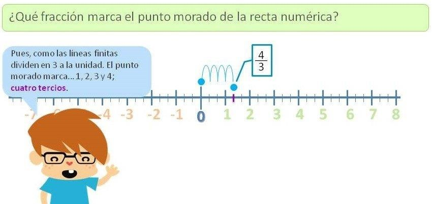
Problema¿Qué fracción marca el punto morado en la recta numérica? Pantalla Recta numérica con sectores que dividen la unidad en tercios; el punto morado se sitúa en la primera marca después de la unidad. Solución: Pues como las líneas finitas dividen en 3 a la unidad. El punto morado marca… 1, 2, 3 y 4; cuatro tercios
3. Operador
Cuando comenzamos a operar con fracciones, sobre todo al multiplicar (operación de muy difícil didáctica, ya que “veces más” hace el número “más pequeño”), se entiende como un operador, elemento que, al aplicarlo sobre el número, afecta a su valor; de tal modo, “si yo aplico ½ a 6, 6 pasa a ser 3”. Esto ocurre en niveles muy básicos de comprensión, cuando aún no se logra comprender ½ de 6 como ½ X 6 y, menos todavía, la fracción como una división. Es, en cierto modo, una comprensión de las mismas como lo que en el futuro los niños estudiarán como funciones:
Al aplicar ½… …sobre 6… …me da
F(x)= ½ x x = 6 F(x) = 3
4. Razón
Consiste en la comprensión de las fracciones como la expresión de una relación entre cantidades. Se refiere a la comprensión de la fracción como la expresión numérica de: “Por cada x hay y”.

Un niño expresa la relación entre cantidades mediante una fracción: “por cada tienda hay 4 scouts, se puede expresar como 1/4.
Además, esta interpretación del concepto de fracción, permite la introducción al concepto de escalas: “Cada cm que mido en el plano hay 1000 cm en la realidad”
5. Cociente
La interpretación de la fracción como un cociente supone la mayor dificultad de comprensión y se trata de la analogía entre divisiones y fracciones. Dificultad que reside en el hecho de que las fracciones son concebidas como números, mientras que las divisiones son una operación.
Así, las diferentes interpretaciones han sido presentadas en orden de dificultad, lo cual es importante tener en cuenta a la hora de introducirlas; teniendo en cuenta que la tendencia general en la dificultad de los contenidos matemáticos es de lo contextualizado a lo abstracto, de lo concreto a lo general:
Número contextualizado Número como entidad abstracta
1/3 de pizza 1/3
6.Clasificación de fracciones
Fracciones propias
Se llaman fracciones propias a aquellas que representan números menores que la unidad. Y ¿cómo son estas fracciones? Todas las fracciones que representan un número menor que la unidad se caracterizan por tener el numerador menor que el denominador. Por ejemplo:
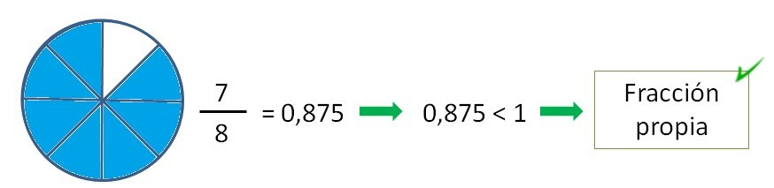
Fracciones impropias
Se llaman fracciones impropias a las que representan números mayores que la unidad. Y ¿cómo son estas fracciones? Todas las fracciones que representan un número mayor que la unidad se caracterizan por tener el numerador mayor que el denominador. Por ejemplo:
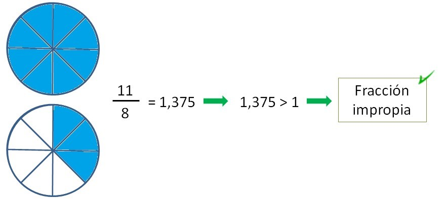
Fracciones iguales a la unidad
Son las que representan números iguales a la unidad. Es decir, son las fracciones que representan el 1 y se caracterizan por tener el numerador y el denominador iguales.
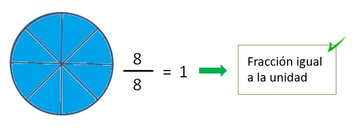
7. Ejemplos de clasificación de fracciones
Vamos a ver ejemplos clasificando estas fracciones:
2527; 12; 54 ; 180180 ; 363 ; 66 ; 42 ; 1010; 200279
2527 < 1 ya que el numerador es menor que el denominador: Es una fracción propia
12 < 1 ya que el numerador es menor que el denominador: Es una fracción propia
54 > 1 ya que el numerador es mayor que el denominador: Es una fracción impropia
180180 = 1 ya que el numerador es igual al denominador: Es una fracción igual a la unidad
363 > 1 ya que el numerador es mayor que el denominador: Es una fracción impropia
66 = 1 ya que el numerador es igual al denominador: Es una fracción igual a la unidad
42 > 1 ya que el numerador es mayor que el denominador: Es una fracción impropia
1010 = 1 ya que el numerador es igual al denominador: Es una fracción igual a la unidad
200279 < 1 ya que el numerador es menor que el denominador: Es una fracción propia
Fracción impropia como número mixto
Recordemos que un número mixto es una manera numérica de representar una fracción mayor que la unidad (fracción impropia), o lo que es lo mismo, de representar fracciones en las que el numerador es mayor que el denominador.
Pongamos un ejemplo para que los entiendas mejor, verás qué fácil:
Si observas la fracción impropia 6713, quizá no te resulte fácil visualizar el número que representa, más allá de que es mayor que la unidad (porque el numerador es mayor que el denominador, es decir, 67 > 13). Pero si la conviertes en un número mixto, podrás interpretar mucho mejor el número que representa.
Para ello, lo primero que debes hacer es dividir el numerador de la fracción entre el denominador, para saber cuantas unidades enteras contiene el número.
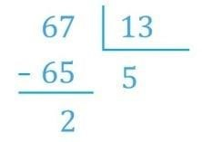
Como 65 = 13 x 5, podemos separar el 67 en 65 y 2, y una de las partes será divisible entre 13 y la otra no:
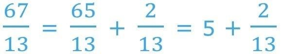
Ahora, es muy fácil escribir el número mixto: primero se escribe la parte entera y a continuación la parte menor que la unidad:
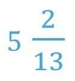
Con esta representación es fácil observar que el número tiene 5 unidades enteras y 2 treceavos de otra unidad.
Veamos ahora unos ejemplos de ejercicios y problemas que existen en Smartick para trabajar los números mixtos.
Ejemplo 1 de ejercicio de números mixtos
En el primer tipo de ejercicios podemos practicar la escritura del número mixto a partir de su representación con gráficos circulares. Como ves en el ejemplo, aparece pintado un círculo completo y 3 partes iguales de 6 de otro.
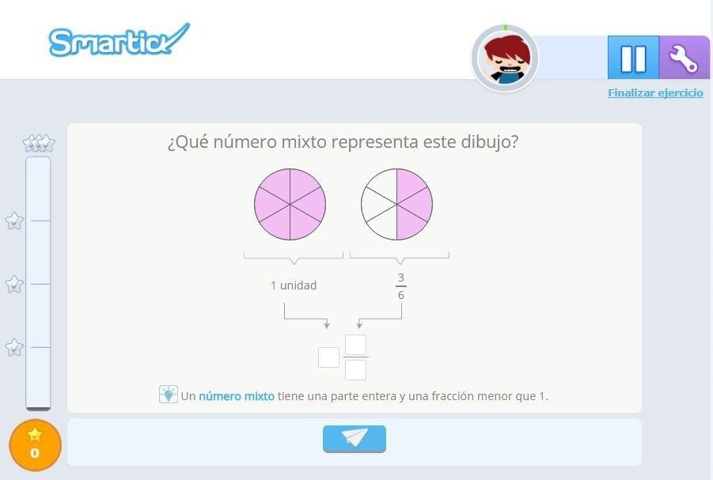
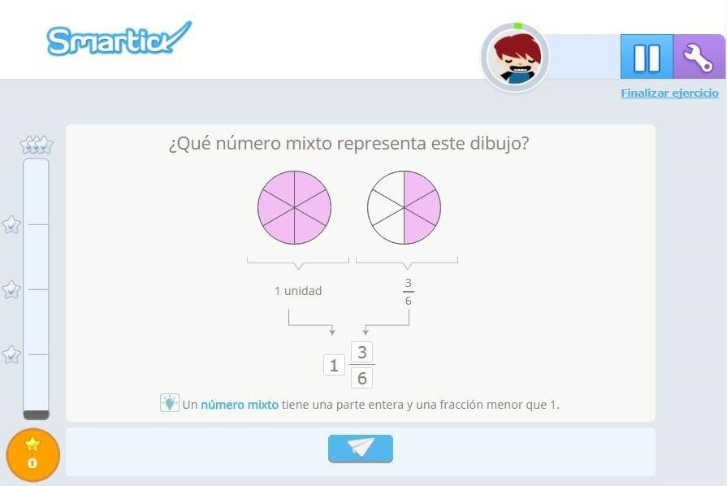
Por lo tanto, es fácil ver que el número representado gráficamente es 136:
Ejemplo 2 de ejercicio de números mixtos
En el segundo tipo de ejercicios podemos practicar el paso de la fracción impropia al número mixto a partir de su representación con pizzas. Como ves en el ejemplo, aparecen 2 pizzas enteras y media pizza.
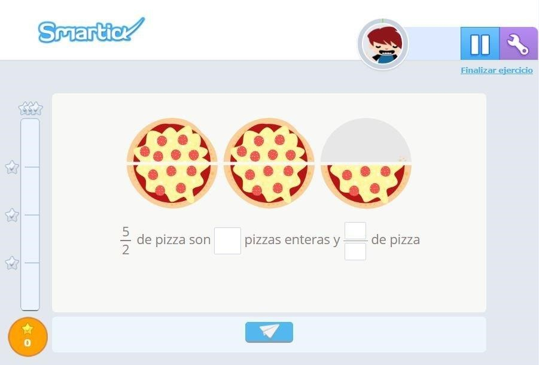
Se puede ver fácilmente que 52 de pizza son 2 pizzas enteras y 12 de pizza.
Es decir, el número mixto que corresponde a la fracción impropia 52 es 212 .
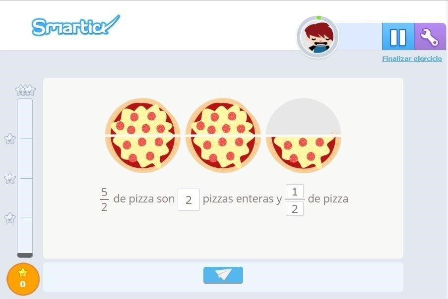
¿A que es mucho más fácil de interpretar?
Ejemplo 3 de ejercicio de números mixtos
En el tercer tipo de ejercicios, podemos practicar la escritura de la fracción impropia y del número mixto a partir de su representación con gráficos circulares. Como ves en el ejemplo, aparecen pintados 3 círculos completos y 2 partes iguales de 4 de otro.
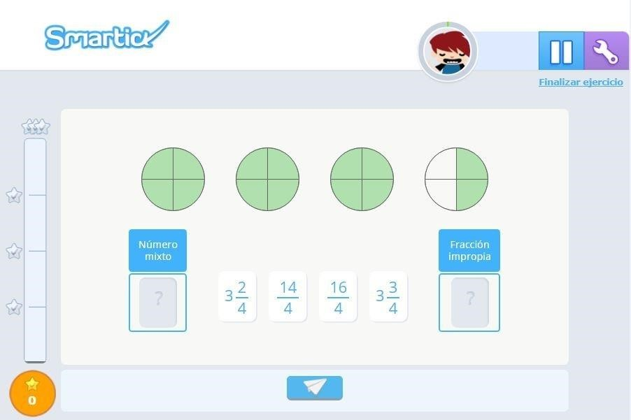
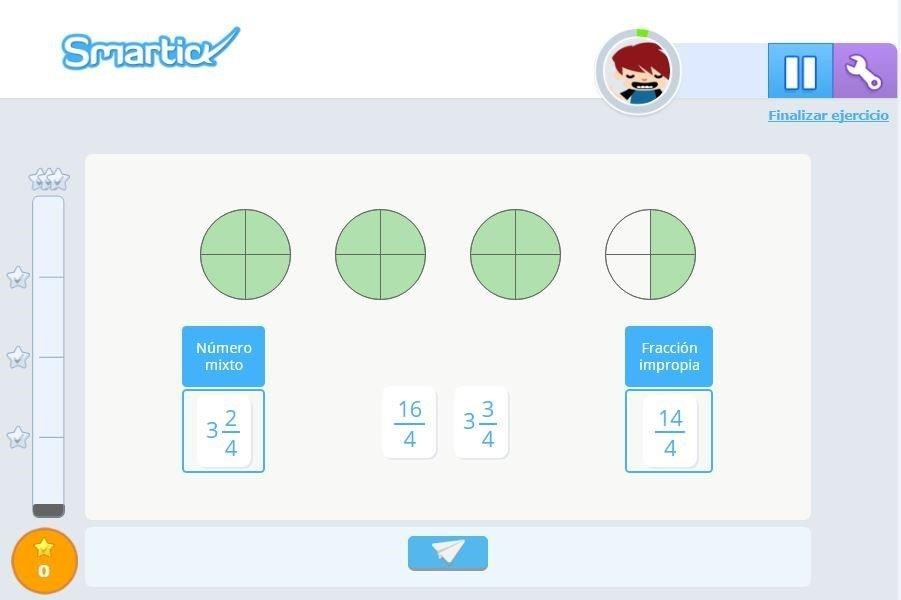
Ahora el número mixto representado es 324 y la fracción impropia que representa es 144 :
Ejemplo 4 de problema de números mixtos
Por último, veamos una actividad de Smartick donde se trabajan los números mixtos dentro de la resolución de problemas.
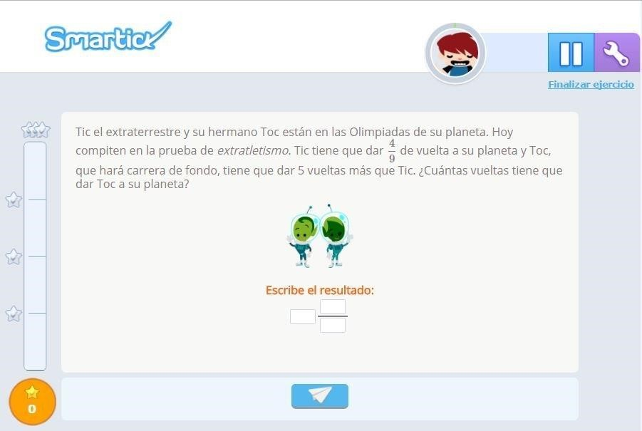
Para calcular las vueltas que tiene que dar Toc a su planeta, como tiene que dar 5 más que Tic, y Tic tiene que dar 49 de vuelta, no hay más que sumar 5 y 49.
Representar este resultado como un número mixto es muy fácil, porque no hay que hacer esa suma de 5 y 49, sino que basta con escribir la parte entera seguida de la fracción: 549.
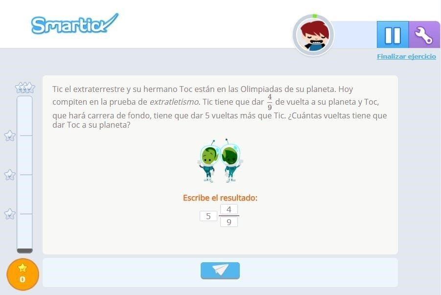
Podemos responder entonces que Toc tiene que dar 549 vueltas a su planeta.